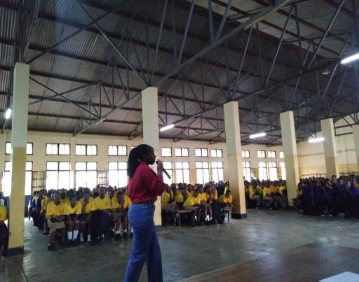
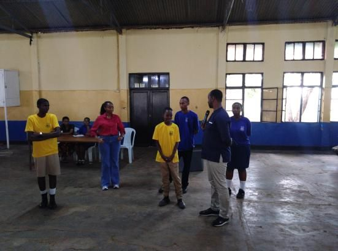
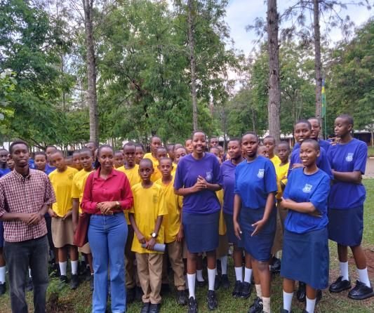
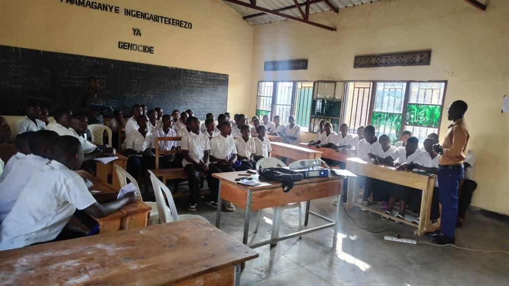
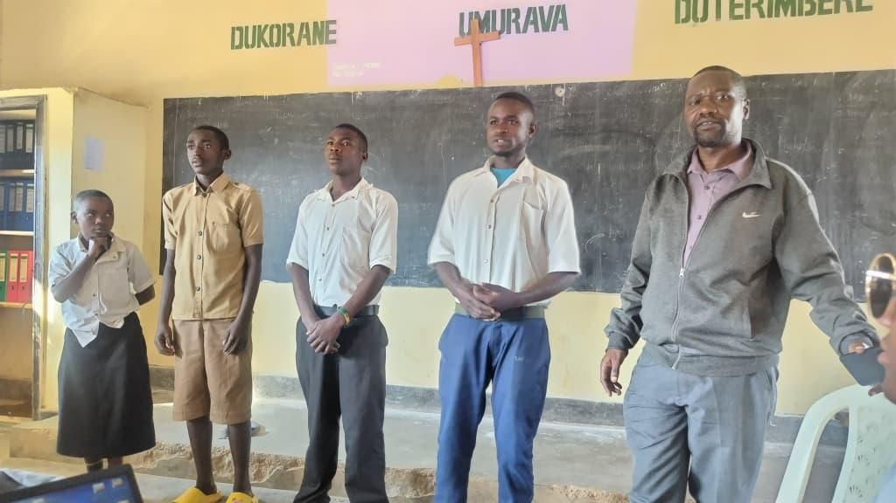
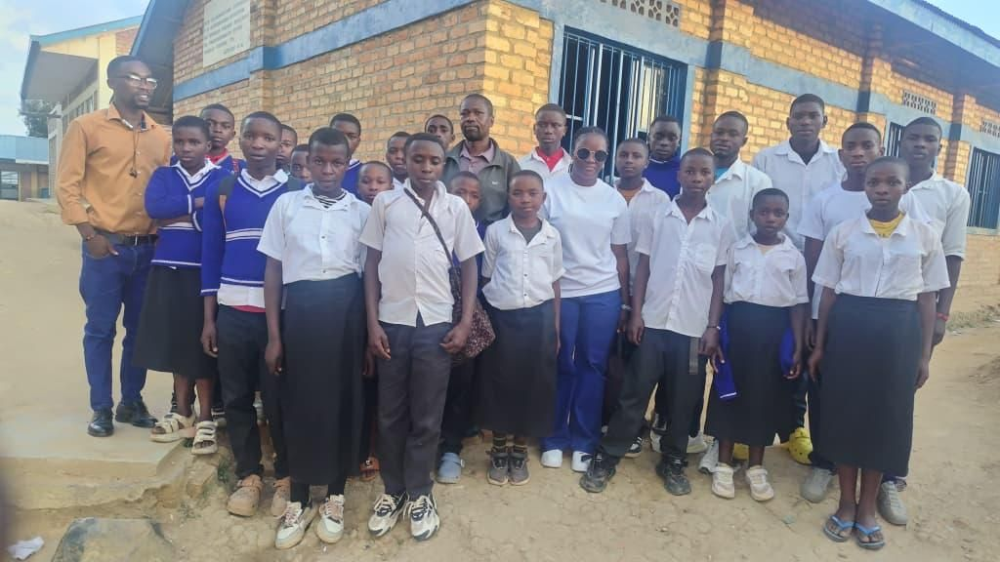

Nyagatare, Eastern Province16 October 2026Nyagatare S.S
928 students, one hall, and a club born on the spot
Nyagatare knows drought. Long dry seasons leave water scarce for families, schools and the livestock farms the district depends on. So when LCOY volunteers arrived at Nyagatare S.S, the talk was about water: how to catch it, how to keep it, and how not to waste it.
928students took part
60founding club members
2 hours14:30 to 16:30
The theme was “Watering the future: water tanks, better livestock farming and irrigation in the Nyagatare rangeland.” Volunteers Isidolla Kabasinga and Elvis Ndamutsa were welcomed by the head teacher, then explained what LCOY is, what drives climate change, and how it hits Eastern Rwanda hardest through water and livestock.
The questions were practical
Students raised a problem from their own dormitories: they bring jerrycans to school at the start of term but aren't allowed to use them to store water. The head teacher agreed on the spot to hand them back. Others asked what they could do as students. The answer: close taps properly, wash with less, shower with less. Small habits, repeated by 928 people, add up.
The session ended with a new Environmental Club, four elected leaders and 60 members.
A club built to last
The club's leaders come from Senior 2, 4 and 5, a deliberate choice so the club continues after this year's finalists leave. Its first mission is to harvest rainwater and protect the school's water and environment. The head teacher pledged the school's support and asked the team to come back.



Reported by Isidolla Kabasinga and Elvis Ndamutsa, translated from KinyarwandaBack to all reports
Nyamagabe, Southern Province14 October 2026GS Kitabi
Planting a tree is the easy part
Nyamagabe's steep slopes lose fertile topsoil every rainy season. At GS Kitabi, a 90-minute session on erosion control and forest restoration ended with students telling the facilitators exactly what they need to act.
85students attended
90 min15:20 to 16:50
6recommended actions
Stopping the soil from leaving
Students learned how runoff on bare, sloping land strips away the topsoil that feeds crops. The fixes are known: trenches and conservation structures, contour farming, trees and permanent ground cover. They only work if they are maintained.
Forest restoration is more than planting trees. It means caring for seedlings, preventing fires and letting degraded land recover.
Restoration is a commitment
The second half focused on bringing degraded forest back: choosing suitable and native species, protecting young seedlings, preventing fires, and getting the community on board. The Environment Club was named as the place where that work can happen at school.
What students asked for
Field trips to forests, restoration sites and other schools' clubs
Tools and materials for hands-on conservation work
Regular, in-depth sessions on erosion, fire prevention, waste, biodiversity and climate
Visits from senior leaders and environmental experts
Books, posters and learning materials to share with the school



Reported by Merci Niyitegeka and Marie Solange MushimiyimanaBack to all reports
Kamonyi, Southern Province13 October 2026Saint Ignace Mugina TSS
“Where do we get the trees?”
The school sits far from the main road and the presenter nearly arrived late. Inside, 346 students and their teachers were waiting for a talk titled Securing Water, Securing Futures: Watershed Protection and Afforestation.
346students, plus teachers
8questions from students
70 min16:20 to 17:30
The message was direct: when watersheds are destroyed, springs dry up, soil washes away, harvests shrink and disasters grow. Trees hold rainwater and soil in place. Protecting them takes schools, communities, local authorities and NGOs working together.
The questions went past the science
Students wanted to know who is responsible for protecting springs and rivers, and how they could join LCOY. Then came the questions the presenter couldn't answer on the spot: where can a school get seedlings when buying them is too expensive? Is there a helpline they can call? How can they invite LCOY to their club's events?
Young people can play an important role in protecting natural resources. The task now is turning that into measurable action.
What the school asked for
More presentations and training on climate and the environment
Tree seedlings and basic tools to plant and care for them
Hands-on training in rainwater harvesting and erosion control
Follow-up support for the existing environmental club, with simple targets like trees planted and survival rate
Huye, Southern Province13 October 2026GS Cyarwa, Tumba
No farm? You can still save soil
Volunteers from the University of Rwanda Huye Campus Environmental Club spent the afternoon with 90 members of the GS Cyarwa Environment Club on one theme: Saving Our Soil: Agroforestry, Water Conservation and Climate-Resilient Agriculture.
90club members
4topics covered
6questions answered
Good questions, honest answers
Do trees compete with crops? They can, if the wrong species is planted or spacing is poor. Choose carefully and prune. Can soil be fertile without expensive fertiliser? Yes: compost, manure, mulching, crop rotation and legumes. What if rain is unreliable? Keep the ground covered, harvest rainwater, diversify crops and follow trusted weather advice.
“What can students do if they don't own farmland?” Plant at school, start composting, protect what's already growing, and take the message home.
Next steps for the club
A small tree nursery and a rota for caring for seedlings
A composting and mulching demonstration plot
Regular clean-ups of drains and water points
Tracking seedlings planted and surviving, and compost produced
Ruhango, Southern Province12 October 2026E.S. Kigoma
They didn't just listen. They planted.
Ruhango is hilly farming country. Heavy rain washes fertile soil down the slopes, and hotter dry spells stress the crops that remain. At E.S. Kigoma, the 55-member ESEK Environmental Club turned a lesson on Greening Ruhango into an afternoon of planting.
55club members
5tree species discussed
7requests from students
Two ideas that work together
Agroforestry puts trees among crops. Grevillea, Calliandra, Alnus, avocado and mango hold soil, add organic matter and provide fruit, fodder and firewood. Conservation agriculture follows three rules: disturb the soil as little as possible, keep it covered with mulch, and rotate crops. Together they keep the hillside where it belongs.
Environmental protection isn't only theory. Tree planting and garden care take teamwork, regular attention and shared responsibility.
Students then planted many trees around the school and tended their garden, putting the lesson into practice the same day.
What the club is asking for
Support to build a tree nursery at school
Materials for a project making flower vases from recycled waste
REMA certificates recognising club members' work
Monthly environmental training
Portable gardens, and training in grafting avocado and mango
In Gicumbi, an LCOY volunteer explained what LCOY Rwanda 2026 is and this year's theme, took students' questions, then visited the school's environmental club.
The conversation centred on how climate change and soil erosion damage farming, water sources, soil fertility and livelihoods in the district, and how agroforestry, sustainable farming, soil conservation, good water management, tree planting and climate information can protect them.
A club with a clear wish list
The club filled in an LCOY registration form setting out its mission, committee, weekly meeting times and budget. Its most urgent needs:
Fruit-tree seeds to plant around the school
Watering cans to keep them alive
A study visit to Rugezi wetland
“Building a sustainable and climate-resilient Gicumbi starts with everyone taking responsibility today.”